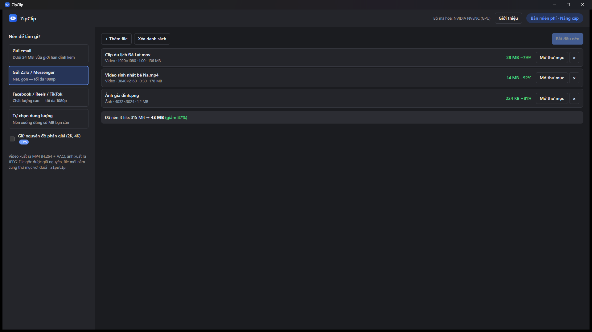

ZipClip
Nén video và ảnh để gửi email, Zalo, Messenger, Facebook — chỉ một cú bấm.
Compress videos and images for email, chat and social media — in one click.

Dưới 24 MB cho email
Tự tính chất lượng để video vừa giới hạn đính kèm của Gmail, Outlook.
Nhanh bằng GPU
Dùng NVIDIA, Intel, AMD nếu có; vẫn chạy trên máy văn phòng không có card rời.
Riêng tư
Xử lý hoàn toàn trên máy. Không tải lên Internet, không tài khoản, không quảng cáo.
Giữ file gốc
File nén nằm cạnh file gốc với đuôi _zipclip.
ZipClip Pro
Bản miễn phí nén 3 file mỗi lượt. Pro (mua một lần) mở khóa nén không giới hạn và giữ nguyên độ phân giải 2K/4K. Mua ngay trong ứng dụng qua Microsoft Store.
Hỗ trợ / Support
Email: tranxuandat.dev@gmail.com — gửi kèm phiên bản (mục Giới thiệu trong app) và mô tả lỗi.
Video sau khi nén vẫn hơi lớn hơn mục tiêu?
Chọn "Tự chọn dung lượng" và đặt thấp hơn 1–2 MB. Video rất nhiều chi tiết (mưa, lá cây, nhiễu) khó nén hơn.
Báo "Video dài … không thể nén xuống … MB"?
Video quá dài so với dung lượng mục tiêu sẽ bị vỡ hình. Hãy chọn dung lượng lớn hơn hoặc cắt ngắn video.
Đã mua Pro nhưng app vẫn báo bản miễn phí?
Đăng nhập Microsoft Store bằng đúng tài khoản đã mua, mở lại ZipClip. Vẫn lỗi thì gửi email cho chúng tôi.